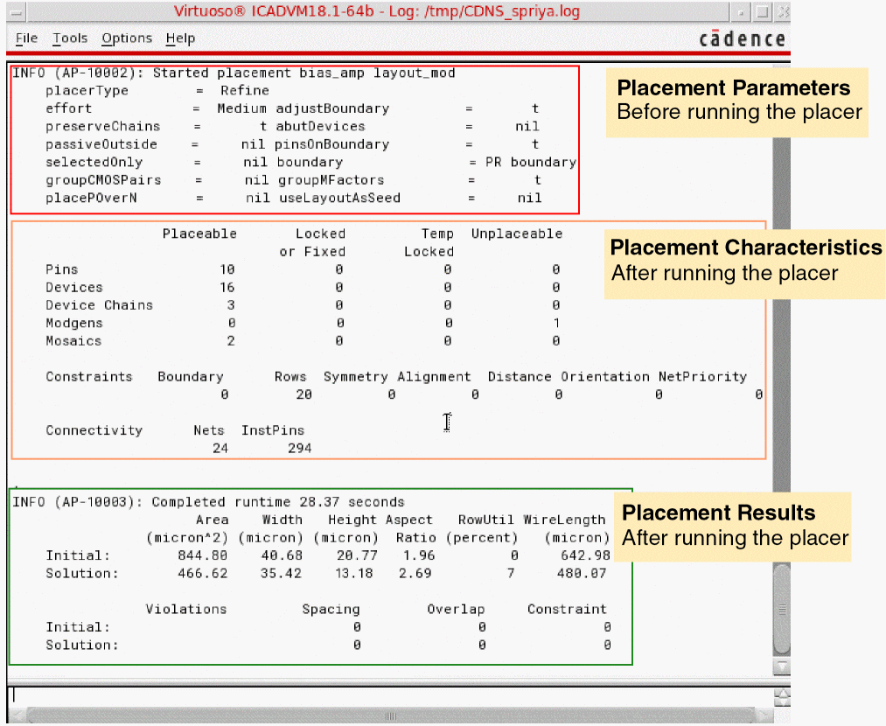

The Placement Statistics Report
The Placement Statistics report is generated dynamically in the CIW as you run the automatic placer. The report provides the following information:

The above report is displayed only when you select the Like Schematic placement option. If you select the Custom Digital option, the Placement Status report is displayed.
The Placement Statistics report displays the following information:
- Before running the automatic placer: A summary of the placement parameters in the current design.
-
After running the automatic placer:
-
Placement Parameters: A list of the number of placeable, locked or fixed, temporarily locked, and unplacable components.
- Placement Results: Summary of the initial placement and the final placement achieved, followed by a list of errors and warnings (if any). The number of spacing and overlap violations is also listed.
-
Placement Parameters: A list of the number of placeable, locked or fixed, temporarily locked, and unplacable components.
Related Topics
Setting the Assisted Placement Options in the Placement Options Form
Setting Automatic Placement Options in the Placement Options Form
Setting Common Options in the Placement Options Form
Return to top